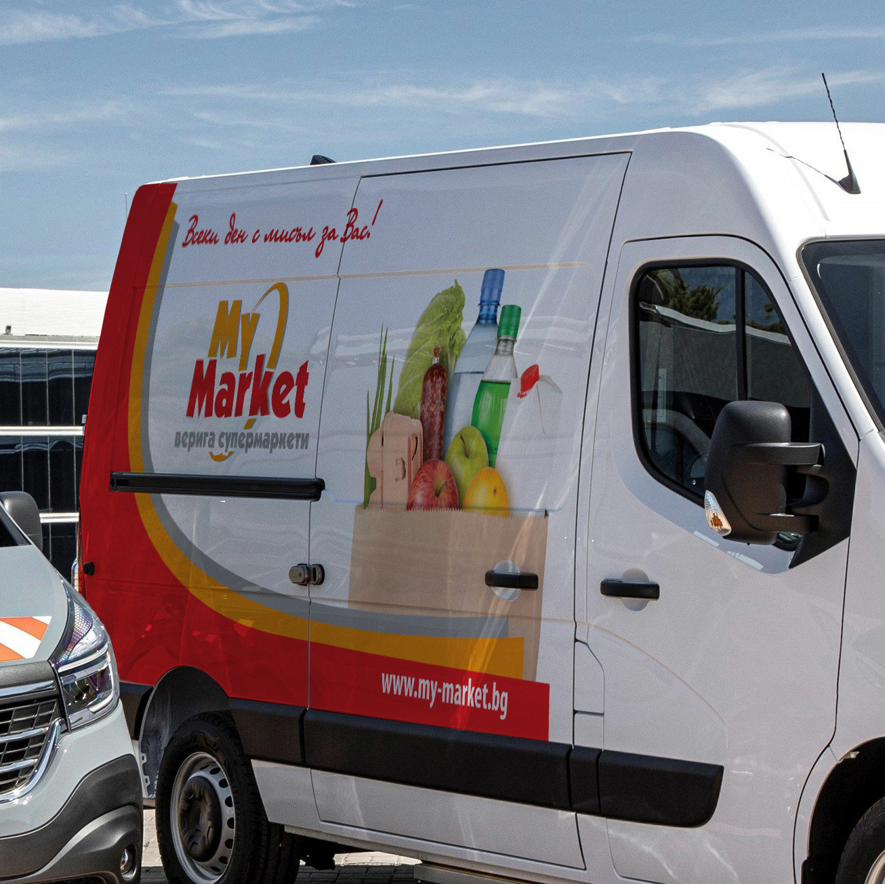
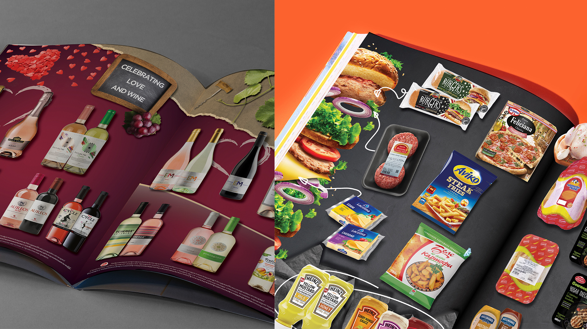

“
They didn't just build a campaign. They changed the trajectory of our company.
How strategy, design and storytelling helped transform VYRE from an underground favorite into a nationally recognized fashion label.

VYRE had built strong loyalty among early adopters but lacked broader market awareness. The brand needed to scale without losing authenticity.

We interviewed customers, mapped competitors, and identified a whitespace between premium streetwear and sustainable fashion.
The new identity centered around confidence, craft, and cultural relevance rather than product features.
Content, creators, experiential activations, and paid media all worked together under one editorial narrative.
Revenue Growth
Follower Growth
ROAS
They didn't just build a campaign. They changed the trajectory of our company.